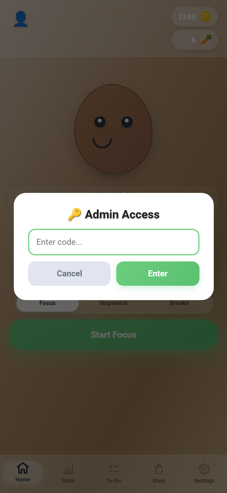
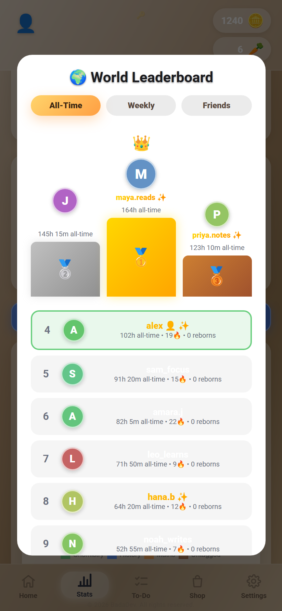
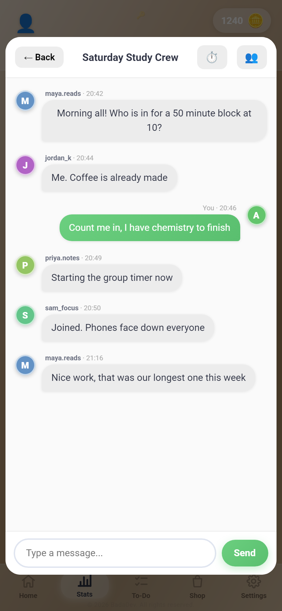
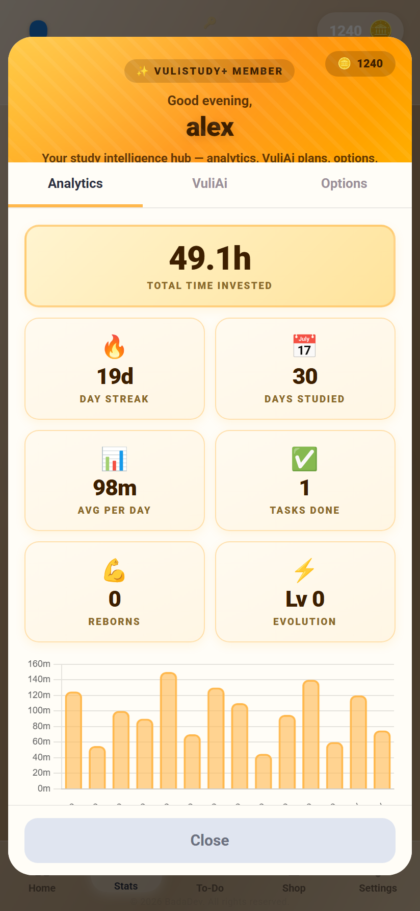
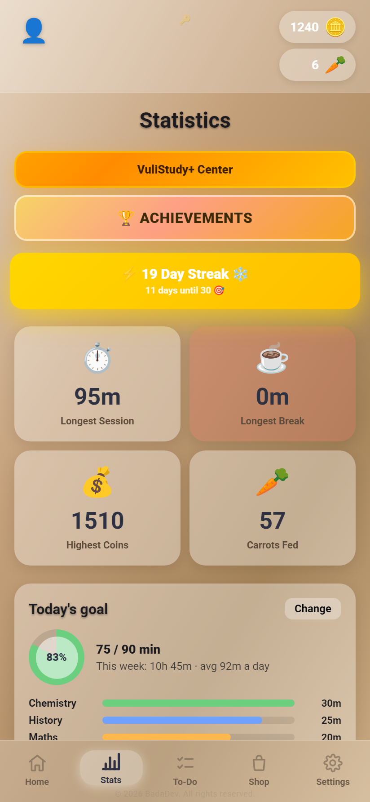

What I’ve built, and what I can build for you
Hello, and thank you for taking a moment to read this.
I’m a student, and I built an app called VuliStudy entirely on my own. It helps people study: they keep a little buddy happy by focusing, earn coins, climb a leaderboard and study together in group chats. Real people use it, and I look after every part of it myself, from the design and the code to the server and database it runs on.
I’m not an average student programmer. I didn’t follow a tutorial and stop. I designed the whole thing, wrote the server, secured the logins, kept people’s data private and made it work as a phone app and a browser extension.
Now I want to use that for something that matters. I want real experience building something useful, and I can’t think of anything more useful than helping the people who help others. So I’d love to build your website and the system behind it, for free.
Here’s a short look at the app, followed by the parts of VuliStudy that already work today and what each one could do for you.

Accounts and secure login
In VuliStudy, everyone signs in with a password, and there’s a separate admin area that only I can open.
For you: a staff-only area, so only your team can see and change the records that matter.

Coins, totals and leaderboards
The server counts every minute studied and every coin earned, then ranks people all-time, weekly and among friends.
For you: tracking bookings, stock or volunteer hours, with up-to-date numbers whenever you need them.

Chats
People make group chats, invite friends and run a shared timer so the whole group studies together.
For you: messages between staff and volunteers, kept in one place instead of scattered across personal phones.

Different levels of access
Free members and VuliStudy+ members see different things, and the server checks which is which every time.
For you: different permissions for staff, volunteers and admins, so each person sees exactly what they need.

A live database, always on
VuliStudy runs on Render with a Supabase database, day and night, and I keep it running myself.
For you: your system running for free on accounts in your charity’s name, so it belongs to you from day one.
What it would cost you
Nothing. I’m not asking to be paid. Everything would sit on Render and Supabase accounts in your charity’s name, on their free plans, so it costs nothing to run and you keep full control. It does not mean the websites will be extremely slow. They might face small second delays, and nothing else. We’d start with whichever job takes up most of your week, and build that first. Nothing about the people you help would ever be shown in public.
The same skills, built for your charity, for free.
Thank you for reading. Everything on this page is already running in VuliStudy, and I’d be glad to show you any of it.
VuliStudy also demonstrates how I can design and draw original graphics from scratch, creating visuals that suit a product rather than relying on generic templates. I can bring that same creative approach to your website.
The screenshots use a test account and made-up names. No real VuliStudy users appear on this page.